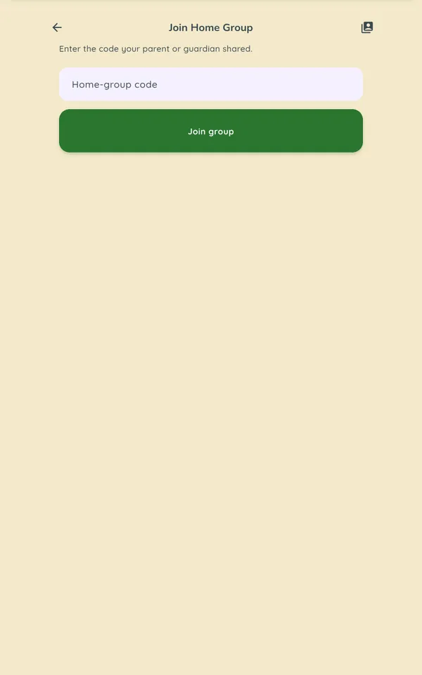
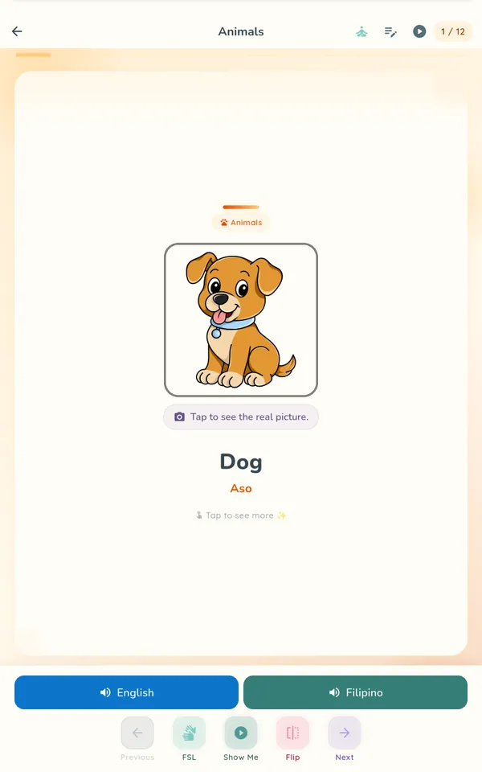
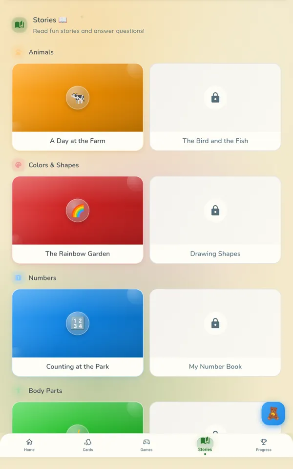
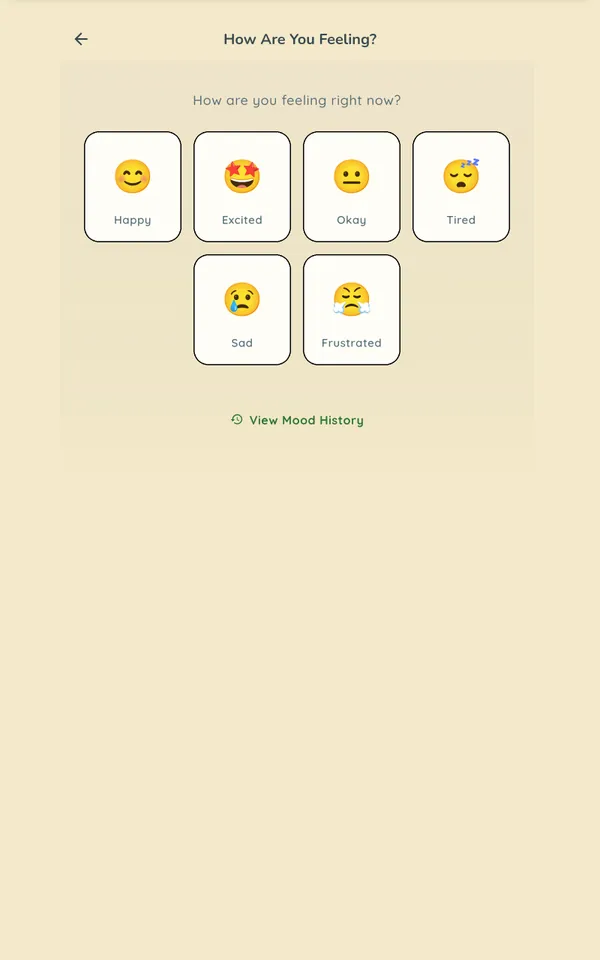
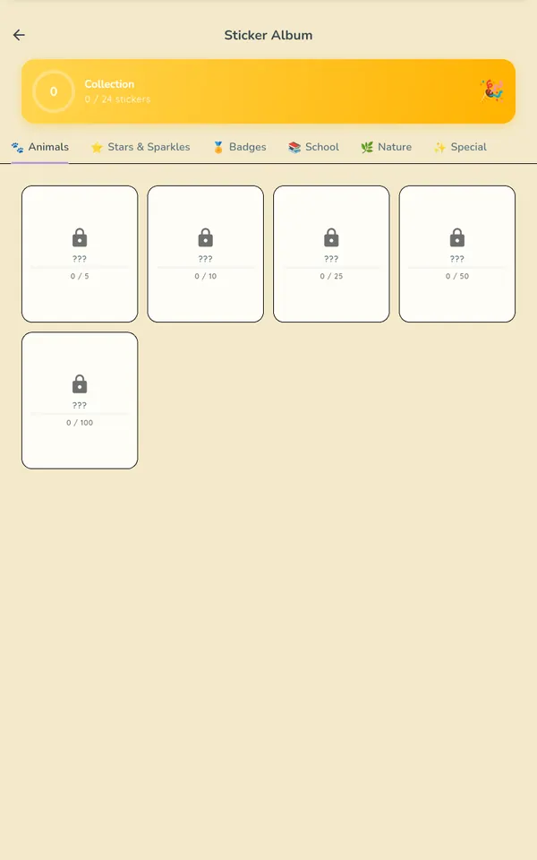
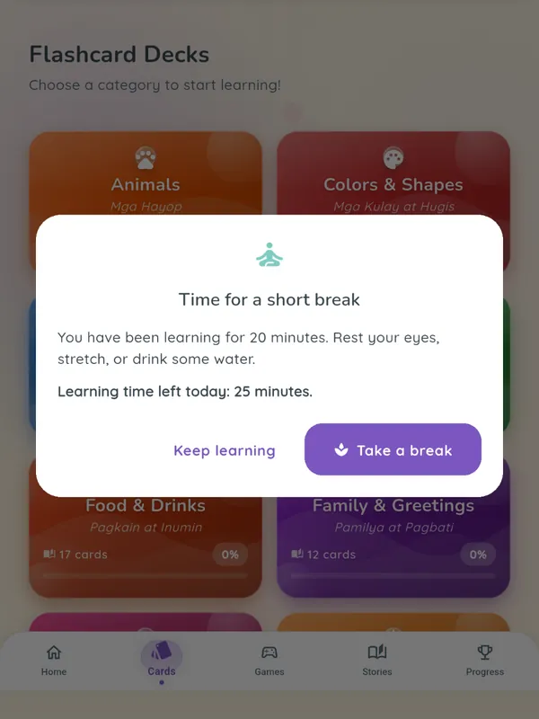
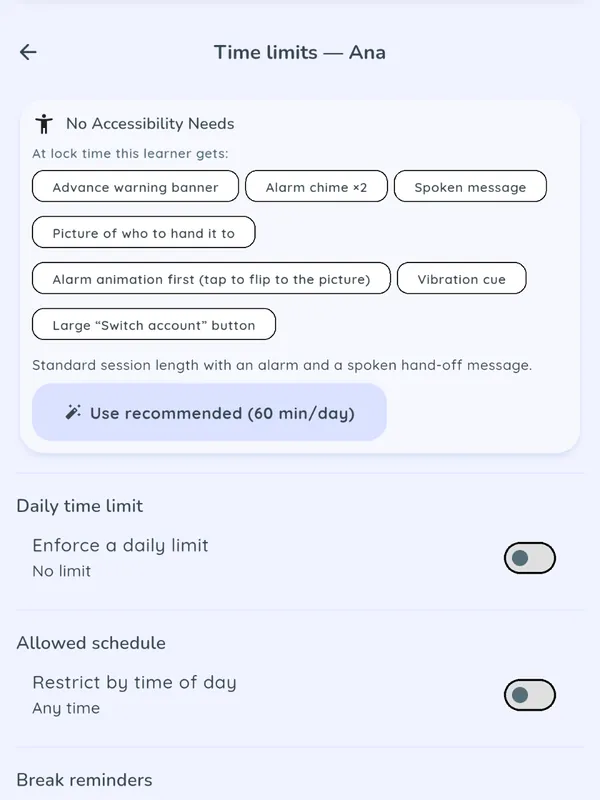
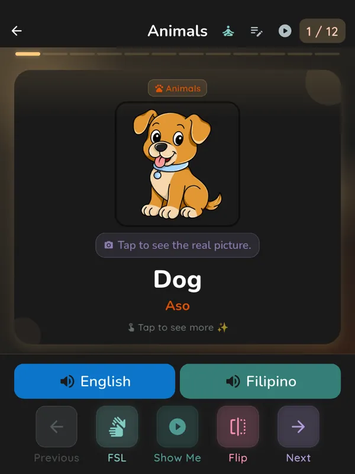
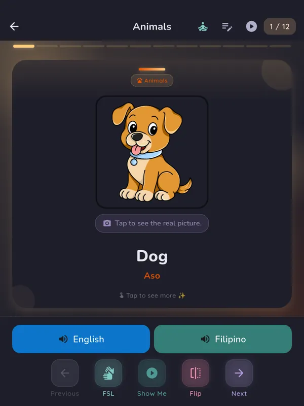

Help & GuidesTulong at mga Gabay
Step-by-step guides for the appMga gabay sa app, hakbang-hakbang
11 simple guides for children, with pictures, and the app’s own 12 guides for students, teachers, parents, and anyone who uses accessibility features. Each one says what to do, in order, using the names you see in the app.11 simpleng gabay para sa mga bata, may larawan, at ang 12 gabay ng app para sa mag-aaral, guro, magulang, at sinumang gumagamit ng mga accessibility feature. Sinasabi ng bawat isa ang gagawin, nang sunod-sunod, gamit ang mga pangalang nakikita mo sa app.
The app’s guides are in the app too. Open Settings → About → Help & Guides. On a child’s or a guest’s Home, tap the accessibility button. In the app, each guide can also be read aloud. The guides For children are written for this website: read them together.Nasa app din ang mga gabay ng app. Buksan ang Settings → About → Tulong at mga Gabay. Sa Home ng bata o guest, i-tap ang accessibility button. Sa app, maaari ring basahin nang malakas ang bawat gabay. Ang mga gabay na Para sa mga bata ay isinulat para sa website na ito: basahin ninyo nang magkasama.
Find your guideHanapin ang iyong gabay
Choose who you are, then open the guide you need. Each guide opens below, with a Read aloud button.Piliin kung sino ka, saka buksan ang gabay na kailangan mo. Bubukas ang bawat gabay sa ibaba, may button na Basahin nang malakas.
For childrenPara sa mga bata
Simple guides with pictures, for children to read with a parent or teacher. Tap a guide to open it.Mga simpleng gabay na may larawan, para basahin ng bata kasama ang magulang o guro. I-tap ang gabay para buksan.
- Hello! Start hereKumusta! Dito magsimulaJoin your family in the app, and find your way around.Sumali sa iyong pamilya sa app, at alamin ang daan.
- Learn new wordsMatuto ng bagong salitaLook, listen and see the sign on flashcards.Tumingin, makinig at tingnan ang senyas sa flashcards.
- Play gamesMaglaroPlay learning games, alone or with a friend.Maglaro ng mga larong pampagkatuto, mag-isa o kasama ang kaibigan.
- Read storiesMagbasa ng kuwentoRead short stories, hear them and answer questions.Magbasa ng maiikling kuwento, pakinggan, at sagutin ang mga tanong.
- Talk with picturesMakipag-usap gamit ang larawanUse the Talk Board to say what you want or need.Gamitin ang Talk Board para sabihin ang gusto o kailangan mo.
- My Day and My FeelingsAng Aking Araw at Aking DamdaminSee what comes next today, and say how you feel.Tingnan ang susunod na gagawin ngayon, at sabihin ang nararamdaman mo.
- Your BuddyAng iyong KaibiganA friendly helper for learning and practising words.Isang mabait na katulong sa pag-aaral at pagsasanay ng mga salita.
- Stars, stickers and moreBituin, sticker at iba paSee what you have earned and how you are growing.Tingnan ang mga nakuha mo at kung paano ka umuunlad.
- Rest and screen timePahinga at oras sa screenTake breaks, and know what happens when your time is up.Magpahinga, at alamin ang nangyayari kapag tapos na ang iyong oras.
- Stay safeManatiling ligtasSimple rules to keep you safe and happy.Mga simpleng tuntunin para manatili kang ligtas at masaya.
- For parents and teachersPara sa magulang at guroSet up a child’s profile, and help them learn on their own.I-set up ang profile ng bata, at tulungan siyang matuto nang mag-isa.
For studentsPara sa mag-aaral
For teachers and parentsPara sa guro at magulang
- For teachersPara sa guroSet up a class, support each learner, assign work and see progress.Mag-set up ng klase, suportahan ang bawat mag-aaral, magbigay ng gawain at tingnan ang progreso.
- For parentsPara sa magulangConnect with your child, guide their learning time and see their progress.Kumonekta sa iyong anak, gabayan ang oras ng pag-aaral at tingnan ang progreso.
- Time limits, breaks and routinesOras, pahinga at routineSet healthy learning time, break reminders, alarms and a daily routine for a learner.Magtakda ng maayos na oras ng pag-aaral, paalala sa pahinga, alarma at routine para sa mag-aaral.
- TV CastTV CastShow a lesson on a TV so the whole class or family can see it.Ipakita ang aralin sa TV para makita ng buong klase o pamilya.
Control the app your wayKontrolin ang app sa paraan mo
- Gaze ControlGaze ControlUse the app with head movements and blinks, without your hands.Gamitin ang app sa galaw ng ulo at pagkurap, nang walang kamay.
- Voice commandsVoice commandsSpeak to move around and choose — with Gaze Control, or with your voice only.Magsalita para lumibot at pumili — kasama ang Gaze Control, o boses lang.
- Game controllerGame controllerUse a Bluetooth game controller. The app says where you are and what each button does.Gumamit ng Bluetooth game controller. Sinasabi ng app kung nasaan ka at ano ang ginagawa ng bawat button.
- Keyboard and switchesKeyboard at switchMove around with arrow keys, or choose with one switch.Lumibot gamit ang arrow keys, o pumili gamit ang isang switch.
See, hear and read your wayMakita, marinig at mabasa sa paraan mo
- Accessibility optionsMga opsyon sa accessibilityChoose only what helps you. You can use several together, and turn any of them off again.Piliin lang ang nakakatulong sa iyo. Maaaring gamitin nang sabay ang ilan, at i-off ulit kahit kailan.
- Screen reader (TalkBack)Screen reader (TalkBack)Hear every button and word with Android’s built-in screen reader.Pakinggan ang bawat button at salita gamit ang screen reader ng Android.
Questions and feedbackMga tanong at feedback
All guidesLahat ng gabay
For childrenPara sa mga bata
Simple guides with pictures, for children to read with a parent or teacher. Tap a guide to open it.Mga simpleng gabay na may larawan, para basahin ng bata kasama ang magulang o guro. I-tap ang gabay para buksan.
Hello! Start hereKumusta! Dito magsimulaJoin your family in the app, and find your way around.Sumali sa iyong pamilya sa app, at alamin ang daan.
This device has no Filipino voice, so another voice reads the Filipino words.Walang boses na Filipino sa device na ito, kaya ibang boses ang babasa sa mga salitang Filipino.


Join your familySumali sa iyong pamilya
- Ask your parent to help you.Magpatulong sa iyong magulang.
- Choose “Child Profile (PWD)”.Piliin ang “Profile ng Bata (PWD)”.
- Type the code your parent gives you. Press “Join group”.I-type ang code na ibibigay ng iyong magulang. Pindutin ang “Sumali sa grupo”.
- Type your name, pick a picture and add your birthday.I-type ang iyong pangalan, pumili ng larawan at ilagay ang iyong kaarawan.
- You can add a 4-number PIN. Only you and your parent should know it.Maaari kang maglagay ng PIN na may 4 na numero. Ikaw at ang iyong magulang lang ang dapat makaalam nito.
Your HomeAng iyong Home
- Home says hello to you by name.Binabati ka ng Home gamit ang iyong pangalan.
- At the top are your Streak, Words and Stars.Sa itaas ang iyong Sunod-sunod, Mga Salita at Mga Bituin.
- Scroll down for big buttons: Play & Learn, Explore & Create, Friends, and Rewards & Feelings.Mag-scroll pababa para sa malalaking button: Maglaro at Matuto, Tuklasin at Lumikha, Mga Kaibigan, at Gantimpala at Damdamin.
- The tabs at the bottom are Home, Cards, Games, Stories and Progress.Ang mga tab sa ibaba ay Home, Mga Kard, Mga Laro, Mga Kwento at Progreso.
- Tap a tab to open it. The back arrow at the top takes you back.I-tap ang tab para buksan. Ang back arrow sa itaas ay pabalik.
More on this website:Higit pa sa website na ito: The App Tour, with pictures and a short videoAng Tour ng App, may larawan at maikling video
Back to all guidesBumalik sa lahat ng gabay (Hello! Start hereKumusta! Dito magsimula)
Learn new wordsMatuto ng bagong salitaLook, listen and see the sign on flashcards.Tumingin, makinig at tingnan ang senyas sa flashcards.
This device has no Filipino voice, so another voice reads the Filipino words.Walang boses na Filipino sa device na ito, kaya ibang boses ang babasa sa mga salitang Filipino.

Use the cardsGamitin ang cards
- Tap Cards.I-tap ang Mga Kard.
- Choose a deck, like Animals.Pumili ng deck, gaya ng Animals.
- Look at the picture and the word. Tap the card to flip it and see more.Tingnan ang larawan at ang salita. I-tap ang card para baligtarin at makita ang iba pa.
- Tap English or Filipino to hear the word.I-tap ang English o Filipino para marinig ang salita.
- Tap FSL to watch the sign.I-tap ang FSL para makita ang senyas.
- Tap Next for the next card.I-tap ang Next para sa susunod na card.
More ways to practiseIba pang paraan ng pagsasanay
- Practice Words: Go over the words you learned before.Sanayin ang mga Salita: Balikan ang mga salitang natutunan mo na.
- Sign Language: Practise the signs you have already seen.Wikang Senyas: Sanayin ang mga senyas na nakita mo na.
- Sign Dictionary: Find a word and watch its sign.Diksyunaryo ng Senyas: Hanapin ang salita at panoorin ang senyas nito.
- Practice With Me: One word at a time: look, listen, say it, then type it.Magsanay Kasama Ko: Isang salita bawat beses: tingnan, pakinggan, sabihin, saka i-type.
More on this website:Higit pa sa website na ito: The FSL Dictionary on this websiteAng Diksyunaryo ng FSL sa website na ito
Back to all guidesBumalik sa lahat ng gabay (Learn new wordsMatuto ng bagong salita)
Play gamesMaglaroPlay learning games, alone or with a friend.Maglaro ng mga larong pampagkatuto, mag-isa o kasama ang kaibigan.
This device has no Filipino voice, so another voice reads the Filipino words.Walang boses na Filipino sa device na ito, kaya ibang boses ang babasa sa mga salitang Filipino.

Play a gameMaglaro
- Tap Games.I-tap ang Mga Laro.
- Choose a game, like Word Match.Pumili ng laro, gaya ng Word Match.
- Follow the picture and words on the screen.Sundin ang larawan at salita sa screen.
- Do your best. You get stars as you play and learn.Gawin ang makakaya mo. Nakakakuha ka ng bituin habang naglalaro at natututo.
Play with a friendMaglaro kasama ang kaibigan
- Play Together: Race a friend, just for fun.Maglaro Nang Sabay: Makipagkarera sa kaibigan, para lang sa saya.
- Peer Collab: You and a friend are one team. You score together.Magtulungan: Isang koponan kayo ng kaibigan mo. Magkasama kayong nagpupuntos.
- Adventure Map: Finish each path to open the next one.Mapa ng Pakikipagsapalaran: Tapusin ang bawat landas para mabuksan ang susunod.
More on this website:Higit pa sa website na ito: Every game in the appBawat laro sa app
Back to all guidesBumalik sa lahat ng gabay (Play gamesMaglaro)
Read storiesMagbasa ng kuwentoRead short stories, hear them and answer questions.Magbasa ng maiikling kuwento, pakinggan, at sagutin ang mga tanong.
This device has no Filipino voice, so another voice reads the Filipino words.Walang boses na Filipino sa device na ito, kaya ibang boses ang babasa sa mga salitang Filipino.

Read a storyMagbasa ng kuwento
- Tap Stories.I-tap ang Mga Kwento.
- Choose a story.Pumili ng kuwento.
- Read it. You can also hear it read aloud.Basahin ito. Maaari mo rin itong marinig na binabasa.
- Answer the questions at the end.Sagutin ang mga tanong sa dulo.
Good to knowMagandang malaman
- A story with a lock opens when you know more words.Bubukas ang kuwentong may kandado kapag mas marami ka nang alam na salita.
Back to all guidesBumalik sa lahat ng gabay (Read storiesMagbasa ng kuwento)
Talk with picturesMakipag-usap gamit ang larawanUse the Talk Board to say what you want or need.Gamitin ang Talk Board para sabihin ang gusto o kailangan mo.
This device has no Filipino voice, so another voice reads the Filipino words.Walang boses na Filipino sa device na ito, kaya ibang boses ang babasa sa mga salitang Filipino.

Say it with the Talk BoardSabihin gamit ang Talk Board
- On Home, tap Talk Board.Sa Home, i-tap ang Talk Board.
- Choose a group, like Greetings, Needs or Feelings.Pumili ng grupo, gaya ng Greetings, Needs o Feelings.
- Tap pictures to build a sentence.Pindutin ang mga larawan para bumuo ng pangungusap.
- Tap the green play button to hear it out loud.I-tap ang berdeng play button para marinig ito nang malakas.
More on this website:Higit pa sa website na ito: The Talk Board in Features in ActionAng Talk Board sa Tingnan ang mga Feature
Back to all guidesBumalik sa lahat ng gabay (Talk with picturesMakipag-usap gamit ang larawan)
My Day and My FeelingsAng Aking Araw at Aking DamdaminSee what comes next today, and say how you feel.Tingnan ang susunod na gagawin ngayon, at sabihin ang nararamdaman mo.
This device has no Filipino voice, so another voice reads the Filipino words.Walang boses na Filipino sa device na ito, kaya ibang boses ang babasa sa mga salitang Filipino.


My DayAng Aking Araw
- My Day shows your day’s steps, like class, homework and rest.Ipinapakita ng My Day ang mga gagawin mo, gaya ng klase, assignment at pahinga.
- Each step has a picture and a time.May larawan at oras ang bawat hakbang.
- Your parent or teacher sets up My Day for you. It shows here when they do.Ang iyong magulang o guro ang gumagawa ng My Day para sa iyo. Lalabas ito rito kapag nagawa na nila.
My FeelingsAking Damdamin
- On Home, find My Feelings.Sa Home, hanapin ang Aking Damdamin.
- Tap the face that shows how you feel.I-tap ang mukhang nagpapakita ng nararamdaman mo.
- You can do it again later, any time.Maaari mo itong gawin ulit mamaya, kahit kailan.
Back to all guidesBumalik sa lahat ng gabay (My Day and My FeelingsAng Aking Araw at Aking Damdamin)
Your BuddyAng iyong KaibiganA friendly helper for learning and practising words.Isang mabait na katulong sa pag-aaral at pagsasanay ng mga salita.
This device has no Filipino voice, so another voice reads the Filipino words.Walang boses na Filipino sa device na ito, kaya ibang boses ang babasa sa mga salitang Filipino.

Learn with BuddyMatuto kasama si Kaibigan
- On Home, tap Buddy. Or tap the round teddy-bear button at the bottom of the screen.Sa Home, i-tap ang Kaibigan. O i-tap ang bilog na button na may teddy bear sa ibaba ng screen.
- Pick a topic you love, like Animals.Pumili ng paksang gusto mo, gaya ng Animals.
- Tap Lesson, Quiz or Practice to learn with Buddy.I-tap ang Aralin, Pagsusulit o Pagsasanay para matuto kasama si Kaibigan.
- Tap Listen to hear what Buddy says. You can also type a question.I-tap ang Pakinggan para marinig ang sinasabi ni Kaibigan. Maaari ka ring mag-type ng tanong.
Good to knowMagandang malaman
- Buddy uses short, simple words.Maiikli at simple ang mga salita ni Kaibigan.
- When speech is on, Buddy reads its words out loud by itself.Kapag naka-on ang speech, kusang binabasa ni Kaibigan nang malakas ang mga salita nito.
Back to all guidesBumalik sa lahat ng gabay (Your BuddyAng iyong Kaibigan)
Stars, stickers and moreBituin, sticker at iba paSee what you have earned and how you are growing.Tingnan ang mga nakuha mo at kung paano ka umuunlad.
This device has no Filipino voice, so another voice reads the Filipino words.Walang boses na Filipino sa device na ito, kaya ibang boses ang babasa sa mga salitang Filipino.


Rewards & FeelingsGantimpala at Damdamin
- My Player Card: Your level, stars, streak and achievements.Aking Kard ng Manlalaro: Ang iyong level, bituin, streak at mga nakamit.
- Stickers: The stickers you collect as you learn.Mga Sticker: Ang mga sticker na naiipon mo habang natututo.
- Tap “How was it?” and answer with a face: Did you have fun? Was it easy? Do you want to use it again?I-tap ang “Kumusta ito?” at sumagot gamit ang mukha: Nag-enjoy ka ba? Madali ba? Gusto mo bang gamitin ulit?
- My Notebook: Write your own notes.Aking Kuwaderno: Isulat ang sarili mong mga tala.
- My Progress: The words you know and your stars.Aking Progreso: Ang mga salitang alam mo at ang iyong mga bituin.
Back to all guidesBumalik sa lahat ng gabay (Stars, stickers and moreBituin, sticker at iba pa)
Rest and screen timePahinga at oras sa screenTake breaks, and know what happens when your time is up.Magpahinga, at alamin ang nangyayari kapag tapos na ang iyong oras.
This device has no Filipino voice, so another voice reads the Filipino words.Walang boses na Filipino sa device na ito, kaya ibang boses ang babasa sa mga salitang Filipino.

Take a breakMagpahinga
- Tired? Tap “I Need a Break” in a lesson or game. You come back to the same place after.Pagod? I-tap ang “I Need a Break” sa aralin o laro. Babalik ka sa parehong lugar pagkatapos.
- Your teacher or parent may set break reminders. When one appears, choose “Take a break” or “Keep learning”.Maaaring maglagay ang guro o magulang ng paalala sa pahinga. Kapag lumabas ito, piliin ang “Magpahinga” o “Magpatuloy sa pag-aaral”.
When your time is upKapag tapos na ang oras
- The tablet tells you: with a sound and words, or with a sign and a picture.Sasabihin ito ng tablet: may tunog at salita, o may senyas at larawan.
- Then it shows who to give the tablet to, like your parent or teacher.Saka nito ipapakita kung kanino mo ibibigay ang tablet, gaya ng iyong magulang o guro.
- If the screen is locked, ask your parent to unlock it.Kapag naka-lock ang screen, hilingin sa magulang na i-unlock ito.
Back to all guidesBumalik sa lahat ng gabay (Rest and screen timePahinga at oras sa screen)
Stay safeManatiling ligtasSimple rules to keep you safe and happy.Mga simpleng tuntunin para manatili kang ligtas at masaya.
This device has no Filipino voice, so another voice reads the Filipino words.Walang boses na Filipino sa device na ito, kaya ibang boses ang babasa sa mga salitang Filipino.
In the appSa app
- Keep your PIN a secret. Only you and your parent should know it.Ilihim ang iyong PIN. Ikaw at ang iyong magulang lang ang dapat makaalam nito.
- In Messages, you write to your parent, and to friends your parent said yes to.Sa Mga Mensahe, sumusulat ka sa iyong magulang, at sa mga kaibigang pinayagan ng iyong magulang.
- Never share your address, your school, a phone number or a password.Huwag ibahagi ang iyong address, paaralan, numero ng telepono o password.
- If something makes you feel sad, scared or confused, stop and tell your parent or teacher.Kapag may nagpalungkot, nagpatakot o nagpalito sa iyo, huminto at sabihin sa iyong magulang o guro.
Your bodyAng iyong katawan
- When your eyes feel tired, rest them. Stretch, or drink some water.Kapag pagod na ang mga mata, ipahinga ang mga ito. Mag-unat, o uminom ng tubig.
- Sit up and hold the tablet with both hands, not too close to your face.Umupo nang tuwid at hawakan ang tablet ng dalawang kamay, hindi masyadong malapit sa mukha.
- Word Hunt uses the camera. Ask a grown-up first, and point it at things, not at people.Gumagamit ng camera ang Word Hunt. Magpaalam muna sa nakatatanda, at itutok ito sa mga bagay, hindi sa tao.
More on this website:Higit pa sa website na ito: Privacy & data: what the app keepsPrivacy at datos: ano ang itinatago ng app
Back to all guidesBumalik sa lahat ng gabay (Stay safeManatiling ligtas)
For parents and teachersPara sa magulang at guroSet up a child’s profile, and help them learn on their own.I-set up ang profile ng bata, at tulungan siyang matuto nang mag-isa.
This device has no Filipino voice, so another voice reads the Filipino words.Walang boses na Filipino sa device na ito, kaya ibang boses ang babasa sa mga salitang Filipino.

Set up your childI-set up ang iyong anak
- On your Parent profile’s Home, open Manage Groups and create a home group.Sa Home ng iyong Parent profile, buksan ang Manage Groups at gumawa ng home group.
- Use Invite your child to get the code.Gamitin ang Invite your child para makuha ang code.
- On your child’s profile, choose “Child Profile (PWD)”, type the code, then add a name, picture and birthday.Sa profile ng iyong anak, piliin ang “Profile ng Bata (PWD)”, i-type ang code, saka ilagay ang pangalan, larawan at kaarawan.
What you can doAng maaari mong gawin
- In Manage Groups, press ⋯ beside your child for View progress, Time limits, Alarms, Routine, Accessibility needs and Unlock screen.Sa Manage Groups, pindutin ang ⋯ sa tabi ng anak para sa View progress, Time limits, Alarms, Routine, Accessibility needs at Unlock screen.
- A friendship with your child starts only after you say yes.Nagsisimula lang ang pakikipagkaibigan ng iyong anak kapag pumayag ka.
- You can give your child work, the way a teacher does. It shows on their Home as Assignments.Maaari kang magbigay ng gawain sa iyong anak, gaya ng ginagawa ng guro. Lalabas ito sa kanyang Home bilang Mga Takdang Gawain.
TipsMga tip
- Sit with your child the first few times, and learn together.Samahan ang iyong anak sa mga unang beses, at mag-aral nang magkasama.
- Turn on only the help your child needs. Too many helpers at once can confuse.I-on lang ang tulong na kailangan ng anak. Nakakalito ang sobrang dami nang sabay.
- Use short sessions and break reminders. Praise effort, not only right answers.Gumamit ng maikling sesyon at paalala sa pahinga. Purihin ang pagsisikap, hindi lang ang tamang sagot.
More on this website:Higit pa sa website na ito: The app’s guide For parentsAng gabay ng app Para sa magulang
More on this website:Higit pa sa website na ito: Time limits and breaks, step by stepTime limits at pahinga, hakbang-hakbang
More on this website:Higit pa sa website na ito: The printable Teacher’s Guide (for parents too)Ang napi-print na Gabay ng Guro (para rin sa magulang)
Back to all guidesBumalik sa lahat ng gabay (For parents and teachersPara sa magulang at guro)
For studentsPara sa mag-aaral
For studentsPara sa mag-aaralHow to learn words, play games and read stories.Paano matuto ng salita, maglaro, at magbasa ng kuwento.
This device has no Filipino voice, so another voice reads the Filipino words.Walang boses na Filipino sa device na ito, kaya ibang boses ang babasa sa mga salitang Filipino.
See it in actionTingnan kung paano ito gumagana: For studentsPara sa mag-aaralVideo 1:22Video 1:22
1:22 · no sound · captions in English and Filipino · uses up to 3.0 MB of data · filmed on app version 1.2.11:22 · walang tunog · may caption sa English at Filipino · gagamit ng hanggang 3.0 MB na data · kinunan sa app version 1.2.1
What you see:Ang makikita mo: We open FlashLearn PWD and choose a profile — no login or email needed. Home shows the learner's streak, words learned and stars, then My Day and a mood check-in. One tap records how they feel today. The Daily Challenge asks what “Sit” is in Filipino. “Umupo” — correct, with bonus stars! Cards opens the flashcard decks, grouped by topic. Each card shows a picture with the English and Filipino word: Dog — Aso. Flipping the card shows details and an example sentence. The FSL button plays a Filipino Sign Language video of the word… …with Replay and speed controls, so learners can practise at their own pace. In Games, “Auto” suggests a difficulty based on the learner's recent accuracy. Next, we pick which word categories to practise… …and play! Word Match asks for the English word for each Filipino word and picture. Further down, Home has many more activities: learning paths, guided practice, assessments, the FSL Dictionary and more. The Talk Board helps learners communicate: tap picture tiles to build a sentence, then hear it read aloud. One tap switches the board to Filipino: “Kamusta. Nauuhaw ako.” Progress shows the streak, stars, words learned, level and overall mastery.Binubuksan natin ang FlashLearn PWD at pumipili ng profile — walang login o email na kailangan. Makikita sa Home ang streak ng mag-aaral, mga natutunang salita at stars, pati ang My Day at mood check-in. Isang tap lang para i-record ang nararamdaman niya ngayong araw. Tanong ng Daily Challenge: ano ang “Sit” sa Filipino? “Umupo” — tama, may bonus stars pa! Sa Cards makikita ang mga flashcard deck, nakaayos ayon sa paksa. Bawat card ay may larawan, kasama ang salitang Ingles at Filipino: Dog — Aso. Kapag in-flip ang card, makikita ang detalye at halimbawang pangungusap. Ang FSL button ay nagpe-play ng video ng salita sa Filipino Sign Language… …may Replay at kontrol sa bilis, para makapagsanay ang mag-aaral sa sarili niyang bilis. Sa Games, nagmumungkahi ang “Auto” ng antas ng hirap batay sa kamakailang accuracy ng mag-aaral. Susunod, pinipili natin ang mga kategorya ng salitang sasanayin… …at maglaro! Sa Word Match, hahanapin ang salitang Ingles para sa bawat salitang Filipino at larawan. Sa ibaba ng Home, marami pang gawain: learning paths, guided practice, assessments, ang FSL Dictionary, at iba pa. Tinutulungan ng Talk Board ang mag-aaral na makipag-usap: i-tap ang mga picture tile para bumuo ng pangungusap, saka pakinggan itong binabasa nang malakas. Isang tap lang, nasa Filipino na ang board: “Kamusta. Nauuhaw ako.” Ipinapakita ng Progress ang streak, stars, mga natutunang salita, level, at kabuuang mastery.
Move around the appPaglibot sa app
- The tabs at the bottom are Home, Cards, Games, Stories and Progress.Ang mga tab sa ibaba ay Home, Cards, Games, Stories at Progress.
- Tap a tab to open it. The back arrow at the top takes you back.I-tap ang tab para buksan. Ang back arrow sa itaas ay pabalik.
Learn words with cardsMatuto gamit ang cards
- Open Cards.Buksan ang Cards.
- Choose a deck, like Animals or Colors.Pumili ng deck, gaya ng Animals o Colors.
- Look at the picture. Tap the card to flip it and see the word.Tingnan ang larawan. I-tap ang card para baligtarin at makita ang salita.
- Tap the speaker to hear the word. Tap FSL to watch the sign.I-tap ang speaker para marinig ang salita. I-tap ang FSL para makita ang senyas.
- Tap Next for the next card.I-tap ang Next para sa susunod na card.
Play and readMaglaro at magbasa
- Games: choose a game and follow the picture and words on the screen.Games: pumili ng laro at sundin ang larawan at salita sa screen.
- Stories: choose a story. You can hear it read aloud.Stories: pumili ng kuwento. Maaari mo itong marinig na binabasa.
- Progress: see your stars, words learned and badges.Progress: tingnan ang iyong mga bituin, natutunang salita at badge.
When you need help or a restKapag kailangan mo ng tulong o pahinga
- Tired? Tap “I Need a Break” in a lesson or game. You come back to the same place after.Pagod? I-tap ang “I Need a Break” sa aralin o laro. Babalik ka sa parehong lugar pagkatapos.
- Your teacher or parent may set break reminders. When one appears, choose “Take a break” or “Keep learning”.Maaaring maglagay ang guro o magulang ng paalala sa pahinga. Kapag lumabas ito, piliin ang “Magpahinga” o “Magpatuloy sa pag-aaral”.
- My Day shows your day’s steps, like class, homework and rest.Ipinapakita ng My Day ang mga gagawin mo, gaya ng klase, assignment at pahinga.
- The AI Buddy button can help you practise. It floats at the bottom of the screen.Makakatulong sa pagsasanay ang button ng AI Buddy. Nasa ibaba ito ng screen.
Join your classSumali sa klase
- Ask your teacher for the class code.Hingin sa guro ang code ng klase.
- On Home, open Join a Class.Sa Home, buksan ang Join a Class.
- Type the code and press Join.I-type ang code at pindutin ang Join.
More on this website:Higit pa sa website na ito: What it is and who it helps: Features in ActionKung ano ito at sino ang natutulungan: Tingnan ang mga Feature
More on this website:Higit pa sa website na ito: The App Tour, with pictures and a short videoAng Tour ng App, may larawan at maikling video
Back to all guidesBumalik sa lahat ng gabay (For studentsPara sa mag-aaral)
For teachers and parentsPara sa guro at magulang
For teachersPara sa guroSet up a class, support each learner, assign work and see progress.Mag-set up ng klase, suportahan ang bawat mag-aaral, magbigay ng gawain at tingnan ang progreso.
This device has no Filipino voice, so another voice reads the Filipino words.Walang boses na Filipino sa device na ito, kaya ibang boses ang babasa sa mga salitang Filipino.
See it in actionTingnan kung paano ito gumagana: For teachersPara sa guroVideo 1:22Video 1:22
1:22 · no sound · captions in English and Filipino · uses up to 3.0 MB of data · filmed on app version 1.2.11:22 · walang tunog · may caption sa English at Filipino · gagamit ng hanggang 3.0 MB na data · kinunan sa app version 1.2.1
What you see:Ang makikita mo: We open FlashLearn PWD and choose a profile — no login or email needed. Home shows the learner's streak, words learned and stars, then My Day and a mood check-in. One tap records how they feel today. The Daily Challenge asks what “Sit” is in Filipino. “Umupo” — correct, with bonus stars! Cards opens the flashcard decks, grouped by topic. Each card shows a picture with the English and Filipino word: Dog — Aso. Flipping the card shows details and an example sentence. The FSL button plays a Filipino Sign Language video of the word… …with Replay and speed controls, so learners can practise at their own pace. In Games, “Auto” suggests a difficulty based on the learner's recent accuracy. Next, we pick which word categories to practise… …and play! Word Match asks for the English word for each Filipino word and picture. Further down, Home has many more activities: learning paths, guided practice, assessments, the FSL Dictionary and more. The Talk Board helps learners communicate: tap picture tiles to build a sentence, then hear it read aloud. One tap switches the board to Filipino: “Kamusta. Nauuhaw ako.” Progress shows the streak, stars, words learned, level and overall mastery.Binubuksan natin ang FlashLearn PWD at pumipili ng profile — walang login o email na kailangan. Makikita sa Home ang streak ng mag-aaral, mga natutunang salita at stars, pati ang My Day at mood check-in. Isang tap lang para i-record ang nararamdaman niya ngayong araw. Tanong ng Daily Challenge: ano ang “Sit” sa Filipino? “Umupo” — tama, may bonus stars pa! Sa Cards makikita ang mga flashcard deck, nakaayos ayon sa paksa. Bawat card ay may larawan, kasama ang salitang Ingles at Filipino: Dog — Aso. Kapag in-flip ang card, makikita ang detalye at halimbawang pangungusap. Ang FSL button ay nagpe-play ng video ng salita sa Filipino Sign Language… …may Replay at kontrol sa bilis, para makapagsanay ang mag-aaral sa sarili niyang bilis. Sa Games, nagmumungkahi ang “Auto” ng antas ng hirap batay sa kamakailang accuracy ng mag-aaral. Susunod, pinipili natin ang mga kategorya ng salitang sasanayin… …at maglaro! Sa Word Match, hahanapin ang salitang Ingles para sa bawat salitang Filipino at larawan. Sa ibaba ng Home, marami pang gawain: learning paths, guided practice, assessments, ang FSL Dictionary, at iba pa. Tinutulungan ng Talk Board ang mag-aaral na makipag-usap: i-tap ang mga picture tile para bumuo ng pangungusap, saka pakinggan itong binabasa nang malakas. Isang tap lang, nasa Filipino na ang board: “Kamusta. Nauuhaw ako.” Ipinapakita ng Progress ang streak, stars, mga natutunang salita, level, at kabuuang mastery.
Set up your classI-set up ang klase
- On your Home, open Manage Classes.Sa iyong Home, buksan ang Manage Classes.
- Create a class and give it a name.Gumawa ng klase at pangalanan ito.
- Use Share Code (Invite students) to give learners the join code.Gamitin ang Share Code (Invite students) para ibigay ang join code.
- Each learner opens Join a Class on their Home and types the code.Bubuksan ng bawat mag-aaral ang Join a Class sa kanilang Home at ita-type ang code.
Support each learnerSuportahan ang bawat mag-aaral
- In Manage Classes, press ⋯ beside a learner. Choose Accessibility needs to set how they learn best (for example sign language first, audio first, gaze or simple words).Sa Manage Classes, pindutin ang ⋯ sa tabi ng mag-aaral. Piliin ang Accessibility needs para itakda kung paano sila pinakamahusay matuto.
- The learner’s tablet receives these settings by itself.Kusa itong matatanggap ng tablet ng mag-aaral.
- To set up Gaze Control or a game controller for a learner, open the learner from your dashboard and choose Gaze Control or Game Controller.Para i-set up ang Gaze Control o game controller ng mag-aaral, buksan ang mag-aaral mula sa dashboard at piliin ang Gaze Control o Game Controller.
Assign work and see progressMagbigay ng gawain at tingnan ang progreso
- Assessments → Assign Tasks: give a test to a class or to some learners.Assessments → Assign Tasks: magbigay ng test sa klase o sa ilang mag-aaral.
- Track Progress and Class Report show who finished and how they did.Ipinapakita ng Track Progress at Class Report kung sino ang natapos at ang resulta.
- Roster & progress shows each learner’s words, games and study time.Ipinapakita ng Roster & progress ang mga salita, laro at oras ng pag-aaral ng bawat isa.
- Live session lets the whole class answer together.Sa Live session, sabay-sabay sasagot ang buong klase.
Time, routines and the TVOras, routine at TV
- Press ⋯ beside a learner for Time limits, Alarms, Routine and Unlock screen. See the “Time limits, breaks and routines” guide.Pindutin ang ⋯ sa tabi ng mag-aaral para sa Time limits, Alarms, Routine at Unlock screen. Tingnan ang gabay na “Oras, pahinga at routine”.
- TV Cast shows a lesson on a TV for the whole class. See the “TV Cast” guide.Ipinapakita ng TV Cast ang aralin sa TV para sa buong klase. Tingnan ang gabay na “TV Cast”.
More on this website:Higit pa sa website na ito: What it is and who it helps: Features in ActionKung ano ito at sino ang natutulungan: Tingnan ang mga Feature
More on this website:Higit pa sa website na ito: The printable Teacher’s GuideAng napi-print na Gabay ng Guro
Back to all guidesBumalik sa lahat ng gabay (For teachersPara sa guro)
For parentsPara sa magulangConnect with your child, guide their learning time and see their progress.Kumonekta sa iyong anak, gabayan ang oras ng pag-aaral at tingnan ang progreso.
This device has no Filipino voice, so another voice reads the Filipino words.Walang boses na Filipino sa device na ito, kaya ibang boses ang babasa sa mga salitang Filipino.
See it in actionTingnan kung paano ito gumagana: For parentsPara sa magulangVideo 1:22Video 1:22
1:22 · no sound · captions in English and Filipino · uses up to 3.0 MB of data · filmed on app version 1.2.11:22 · walang tunog · may caption sa English at Filipino · gagamit ng hanggang 3.0 MB na data · kinunan sa app version 1.2.1
What you see:Ang makikita mo: We open FlashLearn PWD and choose a profile — no login or email needed. Home shows the learner's streak, words learned and stars, then My Day and a mood check-in. One tap records how they feel today. The Daily Challenge asks what “Sit” is in Filipino. “Umupo” — correct, with bonus stars! Cards opens the flashcard decks, grouped by topic. Each card shows a picture with the English and Filipino word: Dog — Aso. Flipping the card shows details and an example sentence. The FSL button plays a Filipino Sign Language video of the word… …with Replay and speed controls, so learners can practise at their own pace. In Games, “Auto” suggests a difficulty based on the learner's recent accuracy. Next, we pick which word categories to practise… …and play! Word Match asks for the English word for each Filipino word and picture. Further down, Home has many more activities: learning paths, guided practice, assessments, the FSL Dictionary and more. The Talk Board helps learners communicate: tap picture tiles to build a sentence, then hear it read aloud. One tap switches the board to Filipino: “Kamusta. Nauuhaw ako.” Progress shows the streak, stars, words learned, level and overall mastery.Binubuksan natin ang FlashLearn PWD at pumipili ng profile — walang login o email na kailangan. Makikita sa Home ang streak ng mag-aaral, mga natutunang salita at stars, pati ang My Day at mood check-in. Isang tap lang para i-record ang nararamdaman niya ngayong araw. Tanong ng Daily Challenge: ano ang “Sit” sa Filipino? “Umupo” — tama, may bonus stars pa! Sa Cards makikita ang mga flashcard deck, nakaayos ayon sa paksa. Bawat card ay may larawan, kasama ang salitang Ingles at Filipino: Dog — Aso. Kapag in-flip ang card, makikita ang detalye at halimbawang pangungusap. Ang FSL button ay nagpe-play ng video ng salita sa Filipino Sign Language… …may Replay at kontrol sa bilis, para makapagsanay ang mag-aaral sa sarili niyang bilis. Sa Games, nagmumungkahi ang “Auto” ng antas ng hirap batay sa kamakailang accuracy ng mag-aaral. Susunod, pinipili natin ang mga kategorya ng salitang sasanayin… …at maglaro! Sa Word Match, hahanapin ang salitang Ingles para sa bawat salitang Filipino at larawan. Sa ibaba ng Home, marami pang gawain: learning paths, guided practice, assessments, ang FSL Dictionary, at iba pa. Tinutulungan ng Talk Board ang mag-aaral na makipag-usap: i-tap ang mga picture tile para bumuo ng pangungusap, saka pakinggan itong binabasa nang malakas. Isang tap lang, nasa Filipino na ang board: “Kamusta. Nauuhaw ako.” Ipinapakita ng Progress ang streak, stars, mga natutunang salita, level, at kabuuang mastery.
Connect with your childKumonekta sa iyong anak
- On your Home, open Manage Groups.Sa iyong Home, buksan ang Manage Groups.
- Create a home group. Use Invite your child to get the code.Gumawa ng home group. Gamitin ang Invite your child para makuha ang code.
- On your child’s profile, type the code to join.Sa profile ng iyong anak, i-type ang code para sumali.
Guide their learningGabayan ang pag-aaral
- In Manage Groups, press ⋯ beside your child for View progress, Time limits, Alarms, Routine, Accessibility needs and Unlock screen.Sa Manage Groups, pindutin ang ⋯ sa tabi ng anak para sa View progress, Time limits, Alarms, Routine, Accessibility needs at Unlock screen.
- Parental Controls (on your Home and in Settings) set limits for the whole tablet.Ang Parental Controls (sa Home at sa Settings) ay naglalagay ng limitasyon sa buong tablet.
- Parent Notes let you and the teacher share messages about your child.Sa Parent Notes, makakapagpalitan kayo ng guro ng mensahe tungkol sa anak.
Help your child learn on their ownTulungan ang anak na matuto nang mag-isa
- Turn on only the help your child needs. Too many helpers at once can confuse.I-on lang ang tulong na kailangan ng anak. Nakakalito ang sobrang dami nang sabay.
- Use short sessions and break reminders. Praise effort, not only right answers.Gumamit ng maikling sesyon at paalala sa pahinga. Purihin ang pagsisikap, hindi lang ang tamang sagot.
- Use My Day so your child knows what comes next.Gamitin ang My Day para alam ng anak kung ano ang susunod.
More on this website:Higit pa sa website na ito: What it is and who it helps: Features in ActionKung ano ito at sino ang natutulungan: Tingnan ang mga Feature
More on this website:Higit pa sa website na ito: The printable Teacher’s Guide (for parents too)Ang napi-print na Gabay ng Guro (para rin sa magulang)
Back to all guidesBumalik sa lahat ng gabay (For parentsPara sa magulang)
Time limits, breaks and routinesOras, pahinga at routineSet healthy learning time, break reminders, alarms and a daily routine for a learner.Magtakda ng maayos na oras ng pag-aaral, paalala sa pahinga, alarma at routine para sa mag-aaral.
This device has no Filipino voice, so another voice reads the Filipino words.Walang boses na Filipino sa device na ito, kaya ibang boses ang babasa sa mga salitang Filipino.
See it in actionTingnan kung paano ito gumagana: Time limits, breaks and routinesOras, pahinga at routine2 pictures2 larawan


Pictures of the real app (version 1.4.6). Select a picture to make it bigger.Mga larawan ng totoong app (version 1.4.6). Piliin ang larawan para lumaki ito.
Open a learner’s settingsBuksan ang settings ng mag-aaral
- Open Manage Classes (teachers) or Manage Groups (parents).Buksan ang Manage Classes (guro) o Manage Groups (magulang).
- Press ⋯ beside the learner.Pindutin ang ⋯ sa tabi ng mag-aaral.
- Choose Time limits, Alarms or Routine.Piliin ang Time limits, Alarms o Routine.
Time limitsTime limits
- Daily time limit: how many minutes a day the learner can use the app.Daily time limit: ilang minuto bawat araw magagamit ng mag-aaral ang app.
- Allowed schedule: the days and hours the app can be used.Allowed schedule: mga araw at oras na magagamit ang app.
- Warn before the lock: a notice a few minutes before time is up, so they can finish.Warn before the lock: abiso ilang minuto bago maubos ang oras, para matapos nila.
- The learner sees how many minutes are left in that notice and in break reminders.Makikita ng mag-aaral ang natitirang minuto sa abisong iyon at sa paalala sa pahinga.
- When time is up you choose: a chime, a spoken message, the name the learner calls you, and a sign language video.Kapag ubos na ang oras, ikaw ang pipili: tunog, binibigkas na mensahe, ang tawag sa iyo ng mag-aaral, at video ng sign language.
Break remindersPaalala sa pahinga
- In Time limits, turn on “Remind them to take a break”.Sa Time limits, i-on ang “Ipaalala na magpahinga”.
- Choose how many minutes of learning come between reminders (10 to 60).Piliin kung ilang minuto ng pag-aaral bago ang bawat paalala (10 hanggang 60).
- The reminder never locks the app. The learner chooses “Take a break” or “Keep learning”.Hindi nito nila-lock ang app. Pipili ang mag-aaral ng “Magpahinga” o “Magpatuloy sa pag-aaral”.
- It is shown on the screen and spoken (if speech is on), and waits during tests, live sessions and games with others.Lumalabas ito sa screen at binibigkas (kung naka-on ang boses), at naghihintay habang may test, live session at larong may kasama.
- Press Save at the bottom of Time limits.Pindutin ang Save sa ibaba ng Time limits.
Alarms and routinesAlarma at routine
- Alarms: set times when the screen locks, for example meal time or bedtime.Alarms: magtakda ng oras na magla-lock ang screen, halimbawa oras ng pagkain o pagtulog.
- Routine (My Day): build the day’s steps in order, like School / Class Time, Homework / Study Time, Break Time and Play Time, or your own Custom Activity. Each step can have a time and a reminder.Routine (My Day): buuin ang mga hakbang ng araw nang sunod-sunod, gaya ng School / Class Time, Homework / Study Time, Break Time at Play Time, o sariling Custom Activity. Maaaring may oras at paalala ang bawat hakbang.
- Unlock screen: give more time when the learner is locked out.Unlock screen: magbigay ng dagdag na oras kapag naka-lock ang mag-aaral.
- Parental Controls set limits for the whole tablet.Nagtatakda ng limitasyon sa buong tablet ang Parental Controls.
More on this website:Higit pa sa website na ito: What it is and who it helps: Features in ActionKung ano ito at sino ang natutulungan: Tingnan ang mga Feature
TV CastTV CastShow a lesson on a TV so the whole class or family can see it.Ipakita ang aralin sa TV para makita ng buong klase o pamilya.
This device has no Filipino voice, so another voice reads the Filipino words.Walang boses na Filipino sa device na ito, kaya ibang boses ang babasa sa mga salitang Filipino.
See it in actionTingnan kung paano ito gumagana: TV CastTV CastPictureLarawan

Pictures of the real app (version 1.4.6). Select a picture to make it bigger.Mga larawan ng totoong app (version 1.4.6). Piliin ang larawan para lumaki ito.
What you needAng kailangan
- The Android app on a tablet or phone (casting does not work from a browser).Ang Android app sa tablet o phone (hindi gumagana mula sa browser).
- A TV with a web browser, on the same Wi-Fi as the tablet. Not every TV can do this.TV na may web browser, sa parehong Wi-Fi ng tablet. Hindi lahat ng TV ay kaya ito.
Start castingMagsimulang mag-cast
- On your Home, open TV Cast.Sa iyong Home, buksan ang TV Cast.
- Choose the class or group, then what to cast.Piliin ang klase o grupo, saka ang ika-cast.
- On the TV, open the web browser and type the link shown on the tablet. (Samsung: the “Internet” app. Chromecast with Google TV: Chrome.)Sa TV, buksan ang web browser at i-type ang link na nasa tablet. (Samsung: ang “Internet” app. Chromecast with Google TV: Chrome.)
- Step the lesson from the tablet. Press Stop casting when you finish.Ituloy ang aralin mula sa tablet. Pindutin ang Stop casting kapag tapos na.
If casting does not workKung hindi gumana ang pag-cast
- Check that the tablet and the TV are on the same Wi-Fi.Tiyaking nasa parehong Wi-Fi ang tablet at TV.
- No browser on the TV? Connect a laptop to the TV with an HDMI cable and open the link on the laptop. (Apple TV: AirPlay a laptop’s browser.)Walang browser ang TV? Ikonekta ang laptop sa TV gamit ang HDMI cable at buksan ang link sa laptop. (Apple TV: i-AirPlay ang browser ng laptop.)
- No TV or Wi-Fi? Use the tablet itself with a small group.Walang TV o Wi-Fi? Gamitin ang tablet mismo sa maliit na grupo.
- Only TVs that open your exact cast link can see the lesson.Ang mga TV lang na nagbukas ng eksaktong cast link mo ang makakakita ng aralin.
More on this website:Higit pa sa website na ito: What it is and who it helps: Features in ActionKung ano ito at sino ang natutulungan: Tingnan ang mga Feature
Back to all guidesBumalik sa lahat ng gabay (TV CastTV Cast)
Control the app your wayKontrolin ang app sa paraan mo
Gaze ControlGaze ControlUse the app with head movements and blinks, without your hands.Gamitin ang app sa galaw ng ulo at pagkurap, nang walang kamay.
This device has no Filipino voice, so another voice reads the Filipino words.Walang boses na Filipino sa device na ito, kaya ibang boses ang babasa sa mga salitang Filipino.
See it in actionTingnan kung paano ito gumagana: Gaze ControlGaze ControlVideo 0:24 · PictureVideo 0:24 · Larawan
0:24 · no sound · captions in English and Filipino · uses up to 1.9 MB of data · filmed on app version 1.2.60:24 · walang tunog · may caption sa English at Filipino · gagamit ng hanggang 1.9 MB na data · kinunan sa app version 1.2.6
What you see:Ang makikita mo: Gaze Control is on. Nobody touches the screen: the learner turns their head to move the highlight. Right to the Settings gear, then down, row by row. A long, deliberate blink opens what is lit — here, the word decks. The same head moves work on every screen.Bukas ang Gaze Control. Walang humahawak sa screen: ibinabaling ng mag-aaral ang ulo para ilipat ang highlight. Pakanan hanggang sa Settings, saka pababa, hanay-hanay. Binubuksan ng mahaba at sinadyang pagkurap ang nakailaw — dito, ang mga deck ng salita. Ganoon din ang galaw ng ulo sa bawat screen.

About Gaze ControlTungkol sa Gaze Control
- What it does: A highlight moves when you turn your head. You choose the highlighted button with a long blink, by keeping still, or with a switch.Ano ito: Gumagalaw ang highlight kapag ibinaling mo ang ulo. Pinipili mo ang naka-highlight na button sa mahabang kurap, sa pananatiling tahimik, o sa switch.
- Who it helps: People who cannot use their hands or arms well.Para kanino: Mga hindi magamit nang maayos ang kamay o braso.
- You need: The Android app (not a browser), the tablet’s front camera, good light on your face, and the tablet in front of you.Kailangan: Ang Android app (hindi browser), front camera ng tablet, maliwanag sa mukha, at nasa harap mo ang tablet.
Turn it onI-on ito
- Open Settings → Accessibility → Gaze Control (Preview).Buksan ang Settings → Accessibility → Gaze Control (Preview).
- Turn on Enable Gaze Control. Allow the camera when asked.I-on ang Enable Gaze Control. Payagan ang camera kapag tinanong.
- Press “Try it now” to practise.Pindutin ang “Try it now” para magsanay.
- Press “Set resting position” while you sit comfortably. This helps if your head rests turned or tilted, for example in a wheelchair.Pindutin ang “Set resting position” habang komportableng nakaupo. Nakakatulong ito kung nakabaling o nakatagilid ang ulo, halimbawa sa wheelchair.
Use itGamitin ito
- Turn your head left, right, up or down to move the highlight.Ibaling ang ulo pakaliwa, pakanan, pataas o pababa para ilipat ang highlight.
- Choose with a long blink. Or turn on “Look and hold to choose” and keep still on a button.Pumili sa mahabang kurap. O i-on ang “Look and hold to choose” at manatiling tahimik sa button.
- “How to choose” can use a switch or controller button instead of a blink.Sa “How to choose,” maaaring switch o button ng controller ang gamitin sa halip na kurap.
- Cannot move your head? Turn on Scanning mode: buttons light up in turn, and you choose with a blink or a switch.Hindi maigalaw ang ulo? I-on ang Scanning mode: sunod-sunod na umiilaw ang mga button, at pipili ka sa kurap o switch.
- “Read the highlight aloud” says each button’s name. The highlight ring shows it on the screen too.Sinasabi ng “Read the highlight aloud” ang pangalan ng bawat button. Makikita rin ito sa screen.
Make it fit youIangkop sa iyo
- Tuning → Sensitivity: how big a head movement is needed.Tuning → Sensitivity: gaano kalaking galaw ng ulo ang kailangan.
- Tuning → Hold time: how long to hold before it chooses. Longer means fewer mistakes.Tuning → Hold time: gaano katagal bago pumili. Mas mahaba, mas kaunting mali.
- Tuning → Smoothing: choose Strong for shaking or jerky movements.Tuning → Smoothing: piliin ang Strong kung nanginginig ang galaw.
Pause and resumeI-pause at ituloy
- With voice commands on, say “stop listening”. Nothing is chosen by accident while you rest or talk.Kapag naka-on ang voice commands, sabihin ang “huwag makinig”. Walang mapipili nang hindi sinasadya habang nagpapahinga o nakikipag-usap.
- A banner shows that hands-free control is paused.May banner na nagsasabing naka-pause ang hands-free control.
- To go on: say “resume”, make a long blink, press your switch, or tap the banner.Para magpatuloy: sabihin ang “ituloy”, kumurap nang matagal, pindutin ang switch, o i-tap ang banner.
Turn it offI-off ito
- Turn off Enable Gaze Control.I-off ang Enable Gaze Control.
- The app asks you to keep the change. If nobody answers, it turns back on by itself, so a learner who cannot touch the screen is never stuck.Itatanong ng app kung itutuloy ang pagbabago. Kung walang sasagot, kusa itong babalik, para hindi maipit ang mag-aaral na hindi makahawak sa screen.
- Teachers and parents: open the learner from your dashboard, then Gaze Control, to set it up for them.Mga guro at magulang: buksan ang mag-aaral mula sa dashboard, saka ang Gaze Control, para i-set up ito para sa kanila.
More on this website:Higit pa sa website na ito: What it is and who it helps: Features in ActionKung ano ito at sino ang natutulungan: Tingnan ang mga Feature
More on this website:Higit pa sa website na ito: The Gaze Control page, with the whole videoAng pahina ng Gaze Control, kasama ang buong video
Back to all guidesBumalik sa lahat ng gabay (Gaze ControlGaze Control)
Voice commandsVoice commandsSpeak to move around and choose — with Gaze Control, or with your voice only.Magsalita para lumibot at pumili — kasama ang Gaze Control, o boses lang.
This device has no Filipino voice, so another voice reads the Filipino words.Walang boses na Filipino sa device na ito, kaya ibang boses ang babasa sa mga salitang Filipino.
See it in actionTingnan kung paano ito gumagana: Voice commandsVoice commandsPictureLarawan

Pictures of the real app (version 1.4.6). Select a picture to make it bigger.Mga larawan ng totoong app (version 1.4.6). Piliin ang larawan para lumaki ito.
About voice commandsTungkol sa voice commands
- What it does: The app listens for short commands and does them.Ano ito: Nakikinig ang app sa maiikling utos at ginagawa ang mga ito.
- Who it helps: People who cannot use their hands, with or without head movement.Para kanino: Mga hindi magamit ang kamay, may galaw man ng ulo o wala.
- You need: The Android app, the microphone, and a fairly quiet room. It uses the tablet’s own free speech recognition; some tablets need the internet for it.Kailangan: Ang Android app, mikropono, at medyo tahimik na lugar. Gumagamit ito ng libreng speech recognition ng tablet; ang ilang tablet ay nangangailangan ng internet.
Turn it onI-on ito
- Open Settings → Accessibility → Gaze Control (Preview) and turn on Enable Gaze Control.Buksan ang Settings → Accessibility → Gaze Control (Preview) at i-on ang Enable Gaze Control.
- Under Voice, turn on Voice commands. Allow the microphone when asked.Sa ilalim ng Voice, i-on ang Voice commands. Payagan ang mikropono kapag tinanong.
- No head movement? Also turn on “Voice only (camera off)”. The camera stays off and only your voice is used.Walang galaw ng ulo? I-on din ang “Boses lang (nakapatay ang camera)”. Nakapatay ang camera at boses mo lang ang gagamitin.
What to sayAno ang sasabihin
- “left”, “right”, “up”, “down” — move the highlight. (“kaliwa”, “kanan”, “taas”, “baba”)“kaliwa”, “kanan”, “taas”, “baba” — ilipat ang highlight. (“left”, “right”, “up”, “down”)
- “select” — open the highlighted button. (“piliin”)“piliin” — buksan ang naka-highlight na button. (“select”)
- Say the name of a tab or a button you can see, like “Home”, “Cards” or “Games”. To start learning, say “Cards”.Sabihin ang pangalan ng tab o button na nakikita mo, gaya ng “Home”, “Cards” o “Games”. Para magsimulang matuto, sabihin ang “Cards”.
- “next” and “back” — the next or previous card. (“susunod”, “balik”)“susunod” at “balik” — susunod o nakaraang card. (“next”, “back”)
- “scroll down”, “scroll up” — move the page.“scroll down”, “scroll up” — igalaw ang pahina.
- “go back” — leave this screen. (“isara”)“isara” — umalis sa screen na ito. (“go back”)
- “read the screen” — hear what is on the screen. (“basahin ang screen”)“basahin ang screen” — pakinggan ang nasa screen. (“read the screen”)
- “say again” — hear the last answer again. (“sabihin ulit”)“sabihin ulit” — pakinggan ulit ang huling sagot. (“say again”)
- “what can I say” — hear this list. (“ano ang masasabi ko”)“ano ang masasabi ko” — pakinggan ang listahang ito. (“what can I say”)
- “stop listening” — pause. “resume” — go on. (“huwag makinig”, “ituloy”)“huwag makinig” — pause. “ituloy” — magpatuloy. (“stop listening”, “resume”)
TipsMga tip
- Speak clearly, one command at a time.Magsalita nang malinaw, isang utos sa bawat pagkakataon.
- The small chip on the screen shows what the app heard — useful if you cannot hear the reply.Ipinapakita ng maliit na chip sa screen ang narinig ng app — kapaki-pakinabang kung hindi mo marinig ang sagot.
- Some activities that use the camera (Sign It, Word Hunt) stop head control while they are open; voice keeps working.Ang ilang gawain na gumagamit ng camera (Sign It, Word Hunt) ay pinapahinto ang head control habang bukas; gumagana pa rin ang boses.
Turn it offI-off ito
- Turn off Voice commands in Settings → Accessibility → Gaze Control (Preview).I-off ang Voice commands sa Settings → Accessibility → Gaze Control (Preview).
More on this website:Higit pa sa website na ito: What it is and who it helps: Features in ActionKung ano ito at sino ang natutulungan: Tingnan ang mga Feature
Back to all guidesBumalik sa lahat ng gabay (Voice commandsVoice commands)
Game controllerGame controllerUse a Bluetooth game controller. The app says where you are and what each button does.Gumamit ng Bluetooth game controller. Sinasabi ng app kung nasaan ka at ano ang ginagawa ng bawat button.
This device has no Filipino voice, so another voice reads the Filipino words.Walang boses na Filipino sa device na ito, kaya ibang boses ang babasa sa mga salitang Filipino.
See it in actionTingnan kung paano ito gumagana: Game controllerGame controllerPictureLarawan

Pictures of the real app (version 1.4.6). Select a picture to make it bigger.Mga larawan ng totoong app (version 1.4.6). Piliin ang larawan para lumaki ito.
About the controllerTungkol sa controller
- Who it helps: People who are blind or have low vision, and people who find a touchscreen hard to use.Para kanino: Mga bulag o may mahinang paningin, at mga nahihirapang gumamit ng touchscreen.
- You need: A Bluetooth game controller. In a browser, use the latest Chrome or Edge.Kailangan: Isang Bluetooth game controller. Sa browser, gamitin ang pinakabagong Chrome o Edge.
Turn it onI-on ito
- Pair the controller in the tablet’s Settings → Bluetooth.I-pair ang controller sa Settings → Bluetooth ng tablet.
- In the app: Settings → Accessibility → Game Controller → Enable controller.Sa app: Settings → Accessibility → Game Controller → Enable controller.
- Press “Practise the buttons” to learn them.Pindutin ang “Practise the buttons” para matutunan ang mga ito.
The buttonsAng mga button
- D-pad or left stick: move.D-pad o left stick: gumalaw.
- A: press (yes). B: back or close (no).A: pindutin (oo). B: bumalik o isara (hindi).
- X: read the screen. Y: say it again.X: basahin ang screen. Y: sabihin ulit.
- L1 and R1: go to another section. L2 and R2: the previous or next item.L1 at R1: pumunta sa ibang section. L2 at R2: nakaraan o susunod na item.
- Start: where am I? Select: the button guide.Start: nasaan ako? Select: gabay sa mga button.
- Right stick up or down: scroll. L3: Home. R3: stop talking.Right stick pataas o pababa: scroll. L3: Home. R3: tumigil sa pagsasalita.
Make it fit youIangkop sa iyo
- “Say what is happening” and Speech speed control the spoken help.Kinokontrol ng “Say what is happening” at Speech speed ang boses na tulong.
- “Vibrate on each press” gives a buzz you can feel (if the controller can vibrate).Nagbibigay ng pag-vibrate ang “Vibrate on each press” (kung kaya ng controller).
- “Ignore repeat presses within” helps if your hand shakes. “Swap A and B” fixes controllers with swapped buttons.Nakakatulong ang “Ignore repeat presses within” kung nanginginig ang kamay. Inaayos ng “Swap A and B” ang controller na baligtad ang button.
Turn it offI-off ito
- Turn off Enable controller.I-off ang Enable controller.
More on this website:Higit pa sa website na ito: What it is and who it helps: Features in ActionKung ano ito at sino ang natutulungan: Tingnan ang mga Feature
Back to all guidesBumalik sa lahat ng gabay (Game controllerGame controller)
Keyboard and switchesKeyboard at switchMove around with arrow keys, or choose with one switch.Lumibot gamit ang arrow keys, o pumili gamit ang isang switch.
This device has no Filipino voice, so another voice reads the Filipino words.Walang boses na Filipino sa device na ito, kaya ibang boses ang babasa sa mga salitang Filipino.
See it in actionTingnan kung paano ito gumagana: Keyboard and switchesKeyboard at switchVideo 0:14 · 2 picturesVideo 0:14 · 2 larawan
0:14 · no sound · captions in English and Filipino · uses up to 1.9 MB of data · filmed on app version 1.2.60:14 · walang tunog · may caption sa English at Filipino · gagamit ng hanggang 1.9 MB na data · kinunan sa app version 1.2.6
What you see:Ang makikita mo: Another learner can’t move their head. With scanning, each row lights up in turn, and the camera stays off. One press of a switch goes into the lit row; a second opens the Talk Board.Hindi maigalaw ng isa pang mag-aaral ang ulo. Sa scanning, isa-isang umiilaw ang bawat hanay, at sarado ang camera. Pumapasok sa nakailaw na hanay ang isang pindot ng switch; binubuksan ng ikalawa ang Talk Board.


KeyboardKeyboard
- Who it helps: People who cannot use a touchscreen but can press keys.Para kanino: Mga hindi makagamit ng touchscreen pero nakakapindot ng key.
- You need: A Bluetooth or USB keyboard, or a device that sends arrow keys.Kailangan: Bluetooth o USB keyboard, o device na nagpapadala ng arrow keys.
- How to use it: Arrow keys move the highlight. Enter or Space presses. Escape goes back.Paano gamitin: Inililipat ng arrow keys ang highlight. Pumipindot ang Enter o Space. Pabalik ang Escape.
One switchIsang switch
- Who it helps: People who can press only one button.Para kanino: Mga isang button lang ang kayang pindutin.
- You need: A Bluetooth switch or any button on a game controller.Kailangan: Bluetooth switch o anumang button ng game controller.
- Turn it on: Settings → Accessibility → Gaze Control (Preview). Turn on Enable Gaze Control. In “How to choose”, pick “A switch or controller button”. Turn on Scanning mode.Paano i-on: Settings → Accessibility → Gaze Control (Preview). I-on ang Enable Gaze Control. Sa “How to choose”, piliin ang “A switch or controller button”. I-on ang Scanning mode.
- How to use it: Buttons light up one after another. Press your switch when the one you want lights up. The camera stays off.Paano gamitin: Sunod-sunod na umiilaw ang mga button. Pindutin ang switch kapag umilaw ang gusto mo. Nakapatay ang camera.
- Turn it off: Turn off Scanning mode, or Enable Gaze Control.Paano i-off: I-off ang Scanning mode, o ang Enable Gaze Control.
More on this website:Higit pa sa website na ito: What it is and who it helps: Features in ActionKung ano ito at sino ang natutulungan: Tingnan ang mga Feature
Back to all guidesBumalik sa lahat ng gabay (Keyboard and switchesKeyboard at switch)
See, hear and read your wayMakita, marinig at mabasa sa paraan mo
Accessibility optionsMga opsyon sa accessibilityChoose only what helps you. You can use several together, and turn any of them off again.Piliin lang ang nakakatulong sa iyo. Maaaring gamitin nang sabay ang ilan, at i-off ulit kahit kailan.
This device has no Filipino voice, so another voice reads the Filipino words.Walang boses na Filipino sa device na ito, kaya ibang boses ang babasa sa mga salitang Filipino.
See it in actionTingnan kung paano ito gumagana: Accessibility optionsMga opsyon sa accessibility4 pictures4 larawan




Pictures of the real app (version 1.4.6). Select a picture to make it bigger.Mga larawan ng totoong app (version 1.4.6). Piliin ang larawan para lumaki ito.
Before you startBago magsimula
- These are options, not labels. You do not need to say what disability you have.Mga opsyon ito, hindi tatak. Hindi mo kailangang sabihin ang iyong kapansanan.
- Most options are in Settings → Accessibility. Children and guests: tap the accessibility button on Home.Karamihan ay nasa Settings → Accessibility. Mga bata at guest: i-tap ang accessibility button sa Home.
- If your teacher or parent manages your settings, ask them to change these for you.Kung guro o magulang ang namamahala sa iyong settings, hilingin sa kanila na palitan ito.
Font Size (bigger text)Font Size (mas malaking letra)
- What it does: Makes all words bigger.Ano ito: Pinalalaki ang lahat ng salita.
- Who it helps: People with low vision, and anyone who reads more easily with big letters.Para kanino: Mga may mahinang paningin, at sinumang mas madaling makabasa sa malaking letra.
- Turn it on: Settings → Accessibility → Font Size. Choose Large or Extra Large.Paano i-on: Settings → Accessibility → Font Size. Piliin ang Large o Extra Large.
- You need: Nothing extra.Kailangan: Walang dagdag na kailangan.
- Turn it off: Choose Normal again.Paano i-off: Piliin ulit ang Normal.
High Contrast Mode and Dark ModeHigh Contrast at Dark Mode
- What it does: High contrast uses strong colors and thick borders. Dark mode uses a dark background.Ano ito: Malakas na kulay at makapal na gilid ang High Contrast. Madilim na background ang Dark Mode.
- Who it helps: People with low vision or who find bright screens hard to look at.Para kanino: Mga may mahinang paningin o nahihirapan sa maliwanag na screen.
- Turn it on: Settings → Accessibility → High Contrast Mode (or Dark Mode).Paano i-on: Settings → Accessibility → High Contrast Mode (o Dark Mode).
- Turn it off: Tap the same switch again.Paano i-off: I-tap ulit ang parehong switch.
Dyslexia-friendlyDyslexia-friendly
- What it does: Uses an easier-to-read font and softer colors.Ano ito: Gumagamit ng mas madaling basahing font at malambot na kulay.
- Who it helps: People with dyslexia or reading difficulties.Para kanino: Mga may dyslexia o hirap sa pagbasa.
- Turn it on: Settings → Accessibility → Dyslexia-friendly.Paano i-on: Settings → Accessibility → Dyslexia-friendly.
- Turn it off: Tap the same switch again.Paano i-off: I-tap ulit ang parehong switch.
Reduced MotionReduced Motion (bawas galaw)
- What it does: Stops most moving and bouncing animations.Ano ito: Pinapahinto ang karamihan ng gumagalaw na animation.
- Who it helps: People who are distracted by movement, or feel unwell from it.Para kanino: Mga nadidistract sa galaw, o nahihilo dahil dito.
- Turn it on: Settings → Accessibility → Reduced Motion.Paano i-on: Settings → Accessibility → Reduced Motion.
- Turn it off: Tap the same switch again.Paano i-off: I-tap ulit ang parehong switch.
Hear the wordsPakinggan ang mga salita
- What it does: Text-to-Speech reads words aloud. Voice-Guided Navigation says the name of each screen.Ano ito: Binabasa nang malakas ng Text-to-Speech ang mga salita. Sinasabi ng Voice-Guided Navigation ang pangalan ng bawat screen.
- Who it helps: People who are blind or have low vision, and people who find reading hard.Para kanino: Mga bulag o may mahinang paningin, at mga nahihirapang magbasa.
- Turn it on: Settings → Audio → Text-to-Speech, and Settings → Accessibility → Voice-Guided Navigation. Speech Speed changes how fast it talks.Paano i-on: Settings → Audio → Text-to-Speech, at Settings → Accessibility → Voice-Guided Navigation. Binabago ng Speech Speed ang bilis.
- You need: The tablet’s sound turned on.Kailangan: Nakabukas ang tunog ng tablet.
- Turn it off: Tap the same switches again.Paano i-off: I-tap ulit ang parehong mga switch.
See, not only hearMakita, hindi lang marinig
- What it does: Words are always written on the screen. Cards and the FSL Dictionary have Filipino Sign Language videos. Time-up, “nearly time” and break notices appear on the screen, not only as sounds.Ano ito: Laging nakasulat ang mga salita sa screen. May video ng Filipino Sign Language ang cards at ang FSL Dictionary. Lumalabas sa screen ang abiso sa oras at pahinga, hindi lang bilang tunog.
- Who it helps: People who are Deaf or hard of hearing.Para kanino: Mga Deaf o mahina ang pandinig.
- How to use it: Tap FSL on a card to watch the sign. Settings → Fullscreen shows sign videos bigger. Slow-Motion Mode makes signs easier to follow.Paano gamitin: I-tap ang FSL sa card para makita ang senyas. Pinalalaki ng Settings → Fullscreen ang video. Pinadadali ng Slow-Motion Mode ang pagsunod sa senyas.
- You need: Internet the first time each sign video plays.Kailangan: Internet sa unang pag-play ng bawat video ng senyas.
Use the app without touching the screenGamitin ang app nang hindi hinahawakan ang screen
- Gaze Control: move your head and blink. See the “Gaze Control” guide.Gaze Control: igalaw ang ulo at kumurap. Tingnan ang gabay na “Gaze Control”.
- Voice commands, or voice only: speak to the app. See the “Voice commands” guide.Voice commands, o boses lang: kausapin ang app. Tingnan ang gabay na “Voice commands”.
- Game controller: big buttons with spoken help. See the “Game controller” guide.Game controller: malalaking button na may tulong na boses. Tingnan ang gabay na “Game controller”.
- Keyboard or switch: see the “Keyboard and switches” guide.Keyboard o switch: tingnan ang gabay na “Keyboard at switch”.
- These work together. For example, use Gaze Control with voice commands.Gumagana ang mga ito nang sabay. Halimbawa, Gaze Control kasama ang voice commands.
Learn at your own paceMatuto sa sariling bilis
- Adaptive Difficulty makes games easier or harder as you play (Settings → Learning Modes).Ang Adaptive Difficulty ay nagpapadali o nagpapahirap sa laro habang naglalaro (Settings → Learning Modes).
- “I Need a Break” is in lessons and games. Break reminders can be set by your teacher or parent.Nasa aralin at laro ang “I Need a Break”. Maaaring maglagay ng paalala sa pahinga ang guro o magulang.
- My Day shows the steps of your day in order, so you know what comes next.Ipinapakita ng My Day ang mga hakbang ng araw nang sunod-sunod, para alam mo ang susunod.
More on this website:Higit pa sa website na ito: What it is and who it helps: Features in ActionKung ano ito at sino ang natutulungan: Tingnan ang mga Feature
More on this website:Higit pa sa website na ito: PWD AwarenessKamalayang PWD
Back to all guidesBumalik sa lahat ng gabay (Accessibility optionsMga opsyon sa accessibility)
Screen reader (TalkBack)Screen reader (TalkBack)Hear every button and word with Android’s built-in screen reader.Pakinggan ang bawat button at salita gamit ang screen reader ng Android.
This device has no Filipino voice, so another voice reads the Filipino words.Walang boses na Filipino sa device na ito, kaya ibang boses ang babasa sa mga salitang Filipino.
About TalkBackTungkol sa TalkBack
- Who it helps: People who are blind or have low vision.Para kanino: Mga bulag o may mahinang paningin.
- You need: Android’s TalkBack (free, already on most tablets).Kailangan: Ang TalkBack ng Android (libre, nasa karamihan ng tablet).
Turn it onI-on ito
- Open the tablet’s Settings → Accessibility → TalkBack.Buksan ang Settings → Accessibility → TalkBack ng tablet.
- Turn TalkBack on.I-on ang TalkBack.
- Open FlashLearn PWD.Buksan ang FlashLearn PWD.
Use itGamitin ito
- Swipe right or left to move from one item to the next. TalkBack reads it.Mag-swipe pakanan o pakaliwa para lumipat sa bawat item. Babasahin ito ng TalkBack.
- Double-tap anywhere to press the item that was read.Mag-double-tap kahit saan para pindutin ang nabasang item.
- Buttons and pictures have names. Filipino words are marked so they can be read in Filipino.May pangalan ang mga button at larawan. Minarkahan ang mga salitang Filipino para mabasa sa Filipino.
- While TalkBack is on, the app sends its own spoken messages through TalkBack.Habang naka-on ang TalkBack, ipinapadaan ng app ang sariling mensahe sa TalkBack.
Turn it offI-off ito
- In the tablet’s Settings → Accessibility → TalkBack, turn it off.Sa Settings → Accessibility → TalkBack ng tablet, i-off ito.
More on this website:Higit pa sa website na ito: What it is and who it helps: Features in ActionKung ano ito at sino ang natutulungan: Tingnan ang mga Feature
Back to all guidesBumalik sa lahat ng gabay (Screen reader (TalkBack)Screen reader (TalkBack))
Questions and feedbackMga tanong at feedback
Rate & FeedbackRating at FeedbackTell the FlashLearn PWD team what you think, report a problem or share an idea.Sabihin sa FlashLearn PWD team ang iyong opinyon, mag-ulat ng problema o magbahagi ng ideya.
This device has no Filipino voice, so another voice reads the Filipino words.Walang boses na Filipino sa device na ito, kaya ibang boses ang babasa sa mga salitang Filipino.
Send feedbackMagpadala ng feedback
- Open Settings → About → Rate & Feedback. The feedback page opens in your browser.Buksan ang Settings → About → Rating at Feedback. Bubukas ang feedback page sa iyong browser.
- Choose stars (optional), who you are, and the kind of message.Pumili ng bituin (opsyonal), kung sino ka, at uri ng mensahe.
- Write your message. Please do not write names, phone numbers or details about a child.Isulat ang mensahe. Huwag isulat ang pangalan, numero ng telepono o detalye tungkol sa bata.
- Press “Send to the team”.Pindutin ang “Ipadala sa team”.
What happens nextAno ang susunod
- “Your feedback has been sent successfully!” means the team received it.Ang “Matagumpay na naipadala ang inyong feedback!” ay nangangahulugang natanggap ito ng team.
- “Your feedback could not be sent. Please try again.” means it did not arrive. Check the internet and try again.Ang “Hindi naipadala ang inyong feedback. Pakisubukan ulit.” ay nangangahulugang hindi ito dumating. Tingnan ang internet at subukan ulit.
- Want a reply? Use “Open in your email app”. Your feedback is sent only when you press Send in your email app.Gusto ng sagot? Gamitin ang “Buksan sa inyong email app”. Maipapadala lang ito kapag pinindot mo ang Send sa email app.
You needKailangan
- The internet.Internet.
Open the feedback formBuksan ang feedback form
Back to all guidesBumalik sa lahat ng gabay (Rate & FeedbackRating at Feedback)